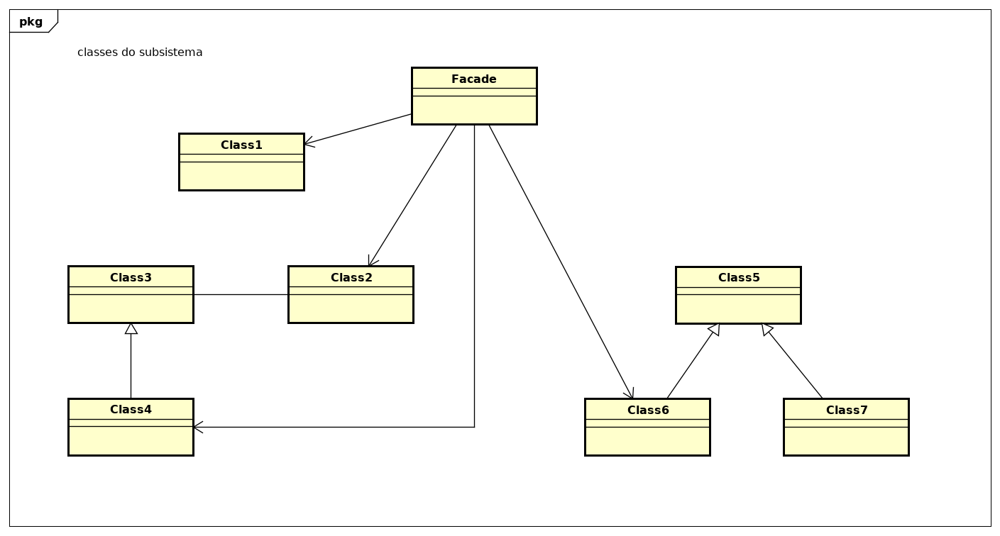

Facade
Descrição:
A intenção do padrão de projeto Facade é fornecer uma interface unificada para um conjunto de interfaces em um subsistema. Facade define uma interface de nível mais alto que torna o subsistema mais fácil de ser usado.
Descrição da Diagrama de Classes genérico do padrão de projeto Facade.
- - implementam a funcionalidade do subsistema;
- - encarregam-se do trabalho atribuído a elas pelo objeto Facade;
- - não tem conhecimento da facade; isto é, não mantêm referências para a mesma.
Diagrama de Classes genérico do padrão:
Exemplo:
Primeiro criamos uma Fachada para o home theater. Para fazer isso, criamos um nova classe, HomeTheaterFacade, que expõe alguns poucos métodos simples, como watchMovie() para assitir a um filme. A classe de fachada trata os componentes do home theater como um subsistema cujas diversas partes são acionadas para implementar o seu método watchMovie(). Agora o código do seu cliente chama o métodos na Fachada do home theater, e não no subsistema. Postanto, para assistir a um filme só precisamos chamar um método watchMovie(), que se comunica com as luzes, o DVD player, o projetor, o amplificador, a tela e a máquina de pipoca. A fachada preserva o acesso direto ao subsistema. Caso precise das funcionalidades avançadas das classses do subsistema, elas estarão disponíveis para o seu uso.